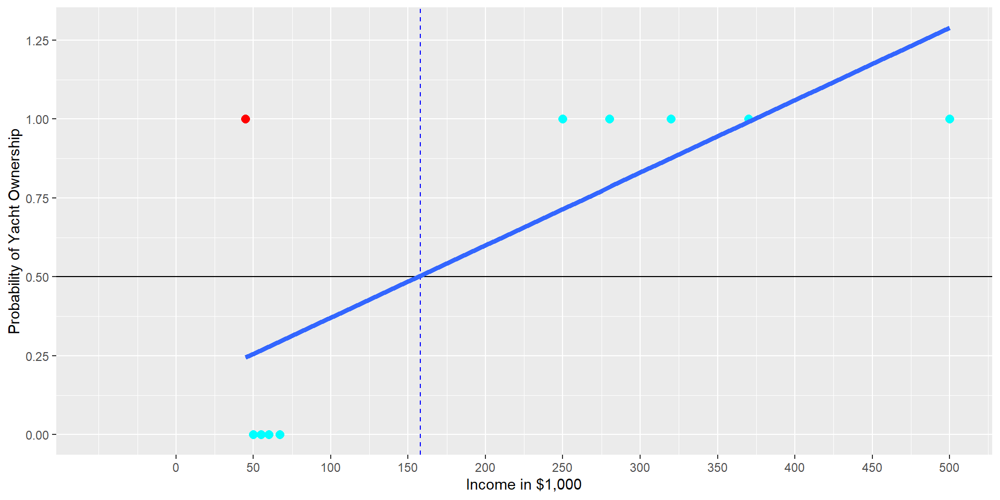

library(plotly)ggplotly(ggplot(aes(x=Income,y=YachtNum),data=DataYachts)+geom_point(size=2.7, color="magenta")+scale_x_continuous(limits =c(-50,500), breaks =seq(0,500,50))+scale_y_continuous(breaks =seq(0,1.25,0.25))+labs(y="Probability of Yacht Ownership", x="Income in $1,000"))
Using OLS is a Tempting (but bad) Idea
library(plotly)ggplotly(ggplot(aes(x=Income,y=YachtNum),data=DataYachts)+geom_hline(yintercept =0.5)+geom_point(size=2.7, color=ifelse(DataYachts$Income==45,"red","cyan"))+geom_smooth(method="lm",se=FALSE, size=1.7)+scale_x_continuous(limits =c(-50,500), breaks =seq(0,500,50))+scale_y_continuous(breaks =seq(0,1.25,0.25))+labs(y="Probability of Yacht Ownership", x="Income in $1,000"))
Quick Way to Find a Decision Boundary
ggplot(aes(x=Income,y=YachtNum),data=DataYachts)+geom_hline(yintercept =0.5)+geom_vline(xintercept =158, linetype="dashed", color="blue")+geom_point(size=2.7, color=ifelse(DataYachts$Income==45,"red","cyan"))+geom_smooth(method="lm",se=FALSE, size=1.7)+scale_x_continuous(limits =c(-50,500), breaks =seq(0,500,50))+scale_y_continuous(breaks =seq(0,1.25,0.25))+labs(y="Probability of Yacht Ownership", x="Income in $1,000")

Find the intersection point between the prediction line and the horizontal 0.5 probability line.
Draw a vertical line through the intersection point. This line is called a decision boundary.
All incomes left of the decision boundary (income smaller than 158) are predicted as “no”. All incomes right of the decision boundary (income greater than 158) are predicted as “yes”.»
Why OLS for Classification is a Bad Idea
library(plotly)ggplotly(ggplot(aes(x=Income,y=YachtNum),data=DataYachts)+geom_hline(yintercept =0.5)+geom_vline(xintercept =158, linetype="dashed", color="blue")+geom_point(size=2.7, color=ifelse(DataYachts$Income==45,"red","cyan"))+geom_smooth(method="lm",se=FALSE, size=1.7)+scale_x_continuous(limits =c(-50,500), breaks =seq(0,500,50))+scale_y_continuous(breaks =seq(0,1.25,0.25))+labs(y="Probability of Yacht Ownership", x="Income in $1,000"))
Note, incomes > $370,000 are predicted with a probability > 100% to be yacht owners(?) E.g. probability of owning a yacht for an income of $500,000 is 125% (?)
A similar problem can occur with negative probabilities!
The Logistic function (confusingly sometimes also called the sigmoid function).
\[
y_i=\frac{1}{1+e^{-x_i}}
\] »
The Logistic Function
The Logistic function (confusingly sometimes also called the sigmoid function):
\[
y_i=\frac{1}{1+e^{-x_i}}
\]
We use: \(y_i=P^{rob}_{yes,i}\) and \(x_i=\beta_1 Inc_i+\beta_2\) which gives us:
\[
P^{rob}_{yes,i}=\frac{1}{1+e^{-(\beta_1 Inc_i+\beta_2)}}
\]\(\beta_1\) and \(\beta_2\) change slope and position \(\beta_1=1\) and \(\beta_2=0\) gives the org. logistic function. 🤓
What Makes the Logistic Function so Special?
— compared to other sigmoid (step) functions —
Time for some mathematical magic:
Logistic function \(P^{rob}_{yes,i}\) := probability for positive event (e.g. yacht ownership: yes):
If income increases by 1 ($1,000) the logarithm of the odds increases by 0.02.
Since change of a logarithm is a relative change (percentage):
If income increases by 1 ($1,000) the odds increases by 2% (0.02). (careful with the results because data were made up and N is too small!)
Confusion Matrix
Note, in the mockup we did not create training and testing data. Therefore, we use DataYachts (the data we used to fit/train the workflow) here. This is not a proper methodology but good enough for the mock-up:
kbl(conf_mat(DataTestWithPred, truth = Churn, estimate = .pred_class)$table)
Yes
No
Yes
239
150
No
322
1403
Accuracy:
kbl(accuracy(DataTestWithPred, truth = Churn, estimate = .pred_class))
.metric
.estimator
.estimate
accuracy
binary
0.7767266
Sensitivity:
kbl(sensitivity(DataTestWithPred, truth = Churn, estimate = .pred_class))
.metric
.estimator
.estimate
sensitivity
binary
0.426025
Specificity:
kbl(specificity(DataTestWithPred, truth = Churn, estimate = .pred_class))
.metric
.estimator
.estimate
specificity
binary
0.9034127
Hint: What do the column sums of the confusion matrix tell you?
Problem: Unballanced Training Data
kbl(count(DataTrain, Churn))
Churn
n
Yes
1308
No
3621
Majority Class:\(Churn=No\) has 3621 observations in the training dataset.
Minority class\(Churn=Yes\) has 1308 observations in the training dataset.
What can we do?
kbl(count(DataTrain, Churn))
Churn
n
Yes
1308
No
3621
Downsampling: Randomly delete observations from majority class until ratio of the observations from the majority and the minority class reaches the desired ratio (e.g., 1:1).
Upsampling: In simplest version, creates new observations for the minority class by copying randomly chosen observations from the minority class until the ratio of the observations from the majority and the minority class reaches the desired ratio (e.g., 1:1).
Often, a combination of downsampling and upsampling is performed.
Performing Down-Sampling with step_downsample()
You need to add the R package themis. Then in your script, you can add step_downsample(Churn) to the recipe (don’t forget to execute the following command lines again). As a reminder our original DataTrain had 4,929 observations, \(Churn_{Yes}=1308\), \(Churn_{No}=3621\):
library(themis)RecipeChurn=recipe(Churn ~ ., data=DataTrain) %>%step_naomit() %>%step_dummy(Gender) %>%step_downsample(Churn)# you do not need to do the following steps.# They just allow to display the count() for the training dataExtractedDataTrain=juice(RecipeChurn %>%prep())kbl(count(ExtractedDataTrain, Churn))
Churn
n
Yes
1308
No
1308
Note, the number of observations has decreased by 2313. This is an information loss!
Performing Up-Sampling with step_upsample()
You need to add the R package themis. Then in your script, you can add step_upsample(Churn) to the recipe (don’t forget to execute the following command lines again). As a reminder our original DataTrain had 4,929 observations, \(Churn_{Yes}=1308\), \(Churn_{No}=3621\):
library(themis)RecipeChurn=recipe(Churn ~ ., data=DataTrain) %>%step_naomit() %>%step_dummy(Gender) %>%step_upsample(Churn)# you do not need to do the following steps.# They just allow to display the count() for the training dataExtractedDataTrain=juice(RecipeChurn %>%prep())kbl(count(ExtractedDataTrain, Churn))
Churn
n
Yes
3621
No
3621
Note, the number of observations has increased by 2313. The information in the dataset has not increased!
Performing Up-Sampling with step_smote(). What is the advantage
As a reminder our original DataTrain had 4,929 observations, \(Churn_{Yes}=1308\), \(Churn_{No}=3621\):
library(themis)RecipeChurn=recipe(Churn ~ ., data=DataTrain) %>%step_naomit() %>%step_dummy(Gender) %>%step_upsample(Churn)# you do not need to do the following steps.# They just allow to display the count() for the training dataExtractedDataTrain=juice(RecipeChurn %>%prep())kbl(count(ExtractedDataTrain, Churn))
Churn
n
Yes
3621
No
3621
Instead of copying a record from the training dataset, step_smote() finds the Nearest Neighbor to that record and creates a new record that has features generated as a weighted average between the Nearest Neighbor and the original record.